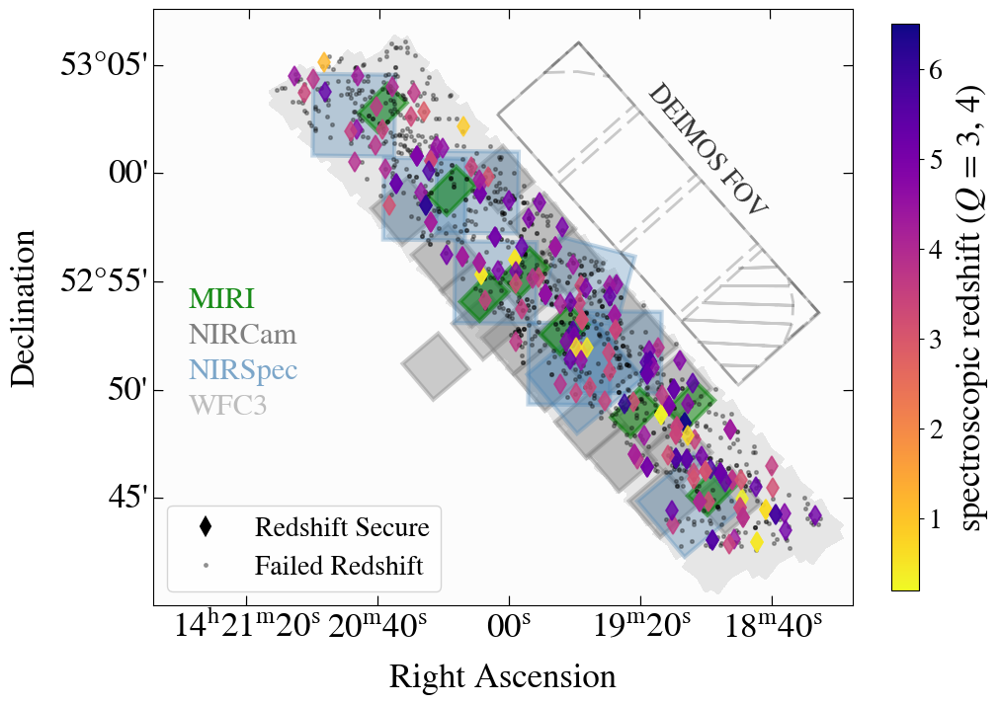

We are approaching a new era in the field of high-redshift galaxies with the launch of the James Webb Space Telescope (JWST). Thus, it is critical to provide a robust sample of potential targets, as well as understand galaxies in the epochs near reionization to bridge the gap between current and future observations. We present the results from 2 spectroscopic surveys to analyze Lyman-α emitters at the epoch before reionization (z~4-6).
Deeper than Deep Survey
with M. C. Cooper, Steven L. Finkelstein, Intae Jung, Pablo G. Pérez-González, Caitlin M. Casey, Olivia R. Cooper, Nimish P. Hathi, Benne W. Holwerda, Anton M. Koekemoer, Vital Fernández, Rebecca L. Larson, Ray A. Lucas, L. Y. Aaron Yung
 We introduce an extensive survey of z > 3 Lyman-α emitters in the EGS field. Using HST photometry, we select 947 potential Lyman-α emitters with zphot > 3 for spectroscopic follow up with Keck/DEIMOS. We confirm 126 Lyman-α emitters at 2.8 < z < 6.5, including 4 with z > 6. Our observations will help constrain the Lyman-α fraction from 4 < z < 6 in an independent field from previous studies. In addition, this survey will greatly assist target selection for The Cosmic Evolution Early Release Science Survey (CEERS), which will study >400 galaxies in the EGS field within the first 5 months of JWST science observations.
WERLS Survey
with Caitlin M. Casey, Jeyhan Kartaltepe, Olivia Cooper, Arianna Long, Mike Cooper, and others